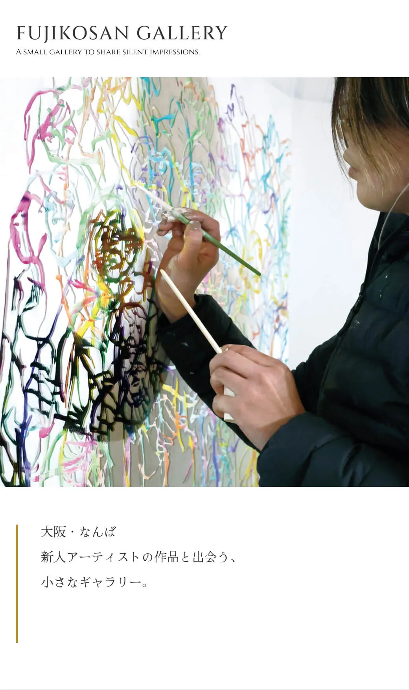
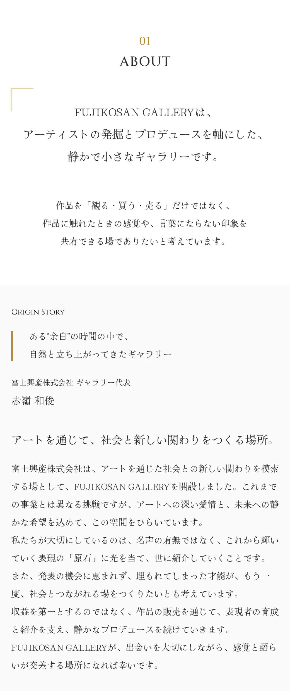
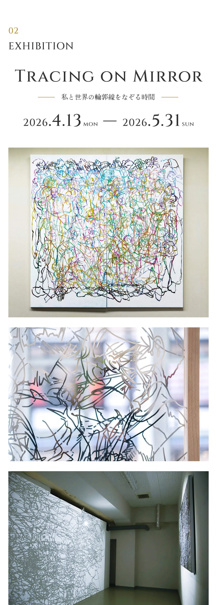
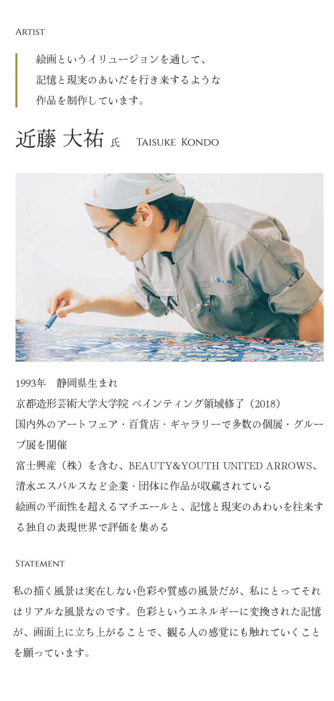
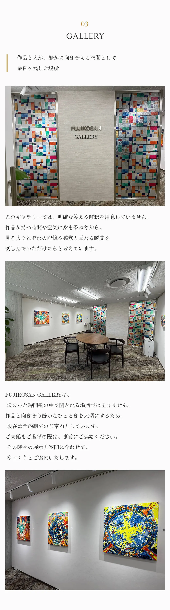
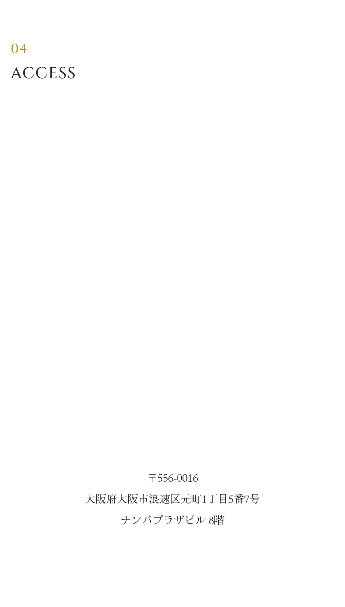

FUJIKOSAN GALLERY
A small gallery to share silent impressions.
大阪・なんば 新人アーティストの作品と出会う、小さなギャラリー。
01 ABOUT
FUJIKOSAN GALLERYは、アーティストの発掘とプロデュースを軸にした、静かで小さなギャラリーです。
作品を「観る・買う・売る」だけではなく、作品に触れたときの感覚や、言葉にならない印象を共有できる場でありたいと考えています。
ORIGIN STORY
ある“余白”の時間の中で、自然と立ち上がってきたギャラリー
富士興産株式会社 ギャラリー代表
赤嶺 和俊
アートを通じて、社会と新しい関わりをつくる場所。
富士興産株式会社は、アートを通じた社会との新しい関わりを模索する場として、FUJIKOSAN GALLERYを開設しました。これまでの事業とは異なる挑戦ですが、アートへの深い愛情と、未来への静かな希望を込めて、この空間をひらいています。
私たちが大切にしているのは、名声の有無ではなく、これから輝いていく表現の「原石」に光を当て、世に紹介していくことです。発表の機会に恵まれず、埋もれてしまった才能が、もう一度、社会とつながれる場をつくりたいと考えています。
収益を第一とするのではなく、作品の販売を通じて、表現者の育成と紹介を支え、静かなプロデュースを続けていきます。ここFUJIKOSAN GALLERYが、出会いを大切にしながら、感覚と語らいが交差する場所になれば幸いです。
02 EXHIBITION
PATHWAYS OF MEMORY
記憶と現実のあわいを辿る —— 色彩になった道筋
会期： —
ARTIST
絵画というイリュージョンを通して、記憶と現実のあいだを行き来するような作品を制作しています。
近藤 大祐
TAISUKE KONDO
1993年 静岡県生まれ
京都造形芸術大学大学院 ペインティング領域修了（2018）
国内外のアートフェア・百貨店・ギャラリーで多数の個展・グループ展を開催
富士興産（株）を含む、UNITED ARROWS、清水エスパルスなど企業・団体に作品が収蔵されている
絵画の平面性を超えるマチエールと、記憶と現実のあわいを往来する独自の表現世界で評価を集める
STATEMENT
私の描く風景は実在しない色彩や質感の風景だが、私にとってそれはリアルな風景なのです。色彩というエネルギーに変換された記憶が、画面上に立ち上がることで、観る人の感覚にも触れていくことを願っています。
03 GALLERY
作品と人が、静かに向き合える空間として余白を残した場所
このギャラリーでは、明確な答えや解釈を用意していません。作品が持つ時間や空気に身を委ねながら、見る人それぞれの記憶や感覚と重なる瞬間を楽しんでいただけたらと考えています。
FUJIKOSAN GALLERYは、決まった時間制の中で開かれる場所ではありません。作品と向き合う静かなひとときを大切にするため、現在は予約制でのご案内としています。ご来館をご希望の際は、事前にご連絡ください。その時々の展示と空間に合わせて、ゆっくりとご案内いたします。
04 ACCESS
〒556-0016
大阪府大阪市浪速区元町1丁目5番7号ナンバプラザビル 8階 
05 CONTACT
展示・作品に関するお問い合わせは、こちらからご連絡ください。
ご質問やご相談がございましたら、ご連絡ください。
MAIL ADDRESS
メールアドレス
PHONE NUMBER
電話番号